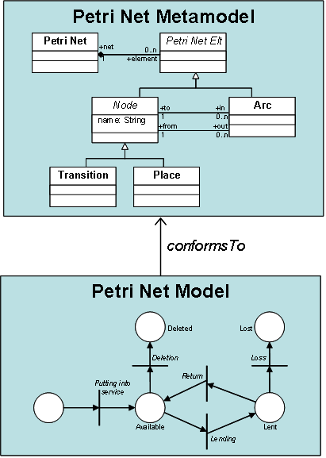
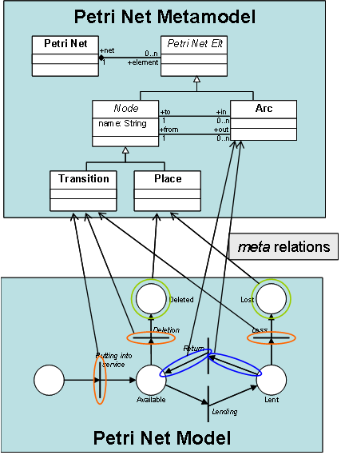
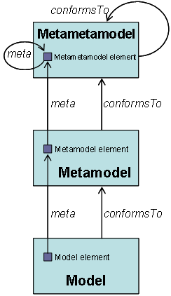

| The Model-Driven Architecture | ||
|---|---|---|
|
|
|
|
| Introduction | Model Transformation | |
Models constitute the basic pieces of the model-driven architecture. Indeed, in the field of model-driven engineering, a model is defined according to the semantics of a model of models, also called a metamodel. A model that respects the semantics defined by a metamodel is said to conform to this metamodel. As an example, Figure 1 illustrates the conformance relation between a Petri net model and the Petri Nets metamodel.



As every model, the described Petri net model is composed of a number of distinct model elements. In the context of a Petri net, these model elements correspond to the places, the transitions and the arcs that compose the model. These different elements, as well as the way they are related, are defined in the scope of the Petri net metamodel. In the same way a model conforms to its metamodel, there exists a relation between the elements of a model and those of its metamodel. This relation, called meta, associates each element of a model with the metamodel element it instantiates. Figure 2 illustrates some of the existing meta relations between elements of the Petri net model and those of the Petri net metamodel.
At this stage, it must be recalled that, before being a metamodel, a metamodel is a model. This implies for it to conform to its own metamodel. To this end, the model-driven architecture defines a third modelling level which corresponds to the metametamodel, as illustrated in Figure 3.
A metametamodel aims to introduce the semantics that are required to specify metamodels. As a model with its metamodel, a metamodel conforms to the metametamodel. Note that a metametamodel is usually self-defined, which means that it can be specified by means of its own semantics. In such a case, a metametamodel conforms to itself.
Several metametamodel technologies are available. The ATL transformation engine currently provides support for two of these existing technologies: the Meta Object Facilities ( MOF 1.4) defined by the OMG and the Ecore metametamodel (Budinsky, F., Steinberg, D., Ellersick, R., Grose, T. Eclipse Modeling Framework, Chapter 5 "Ecore Modeling Concepts". Addison Wesley Professional. ISBN: 0131425420, 2004) defined by the Eclipse Modeling Framework (EMF). This means that ATL is able to handle metamodels that have been specified according to either the MOF or the Ecore semantics.
|
|

|
|
| Introduction | Model Transformation |